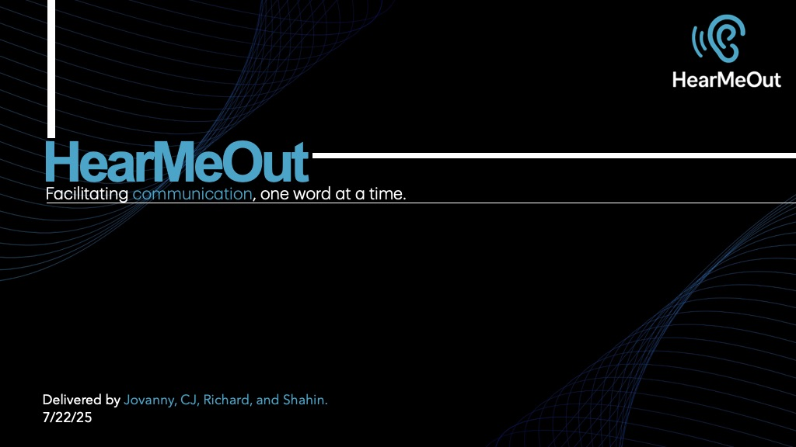
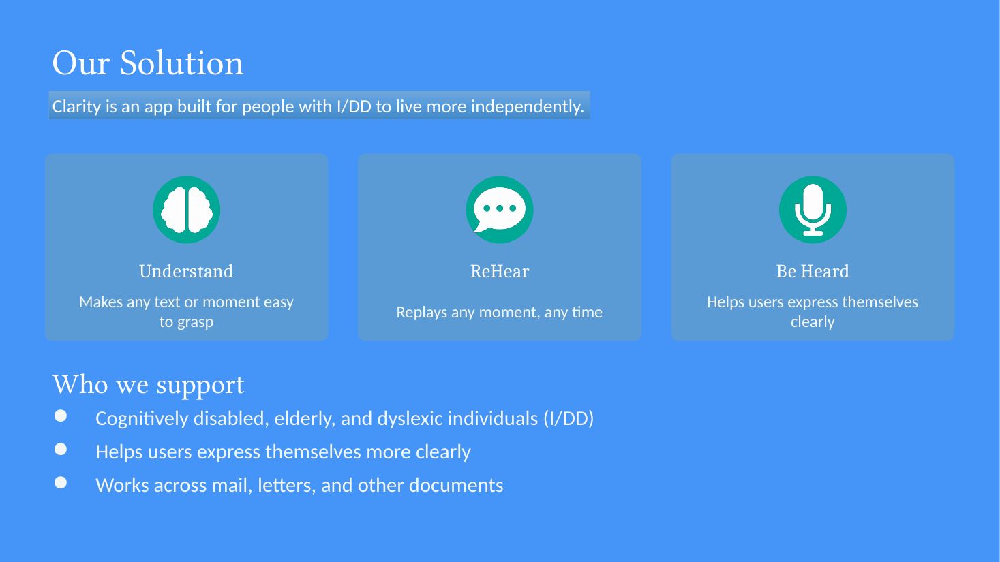

01iOS concept · Communication
HearMeOut
I built HearMeOut as a communication tool for deaf and hard-of-hearing users. I wanted to make the conversation visible when sound isn’t enough.
Explore the full projectChicago · UIUC · CS ’30
I’m Jovanny, a Mexican-American computer science student preparing to become a machine learning engineer. I want to work on the systems, models, and products that will shape what comes next in AI.
BUILDING FOR
THE REAL WORLD
01 / 03
BUILD
My biggest goal is to become a machine learning engineer and contribute to the teams building the future of AI. I’m drawn to the work behind the scenes: training models, understanding how they learn, and turning research into systems people can use.
Learn the foundations. Build the future.
Making AI more accessible is an important reason I care about this path, but my broader ambition is to be part of the engineering work that moves the technology forward.
I’ve shaped two iOS concepts around a simple question: what would make everyday communication easier?

01iOS concept · Communication
I built HearMeOut as a communication tool for deaf and hard-of-hearing users. I wanted to make the conversation visible when sound isn’t enough.
Explore the full project
02iOS concept · Cognitive accessibility
I built Clarity as an all-in-one support concept for people who need help understanding text, revisiting a conversation, or expressing themselves clearly.
Explore the full projectI believe the best product idea begins with a real friction point, not a technology looking for somewhere to go.
I like taking complicated systems and turning them into experiences people can actually trust.
I’m early in the journey, which means curiosity, feedback, and steady iteration matter more than pretending to know everything.
I’m Mexican-American, Catholic, and proud to call Chicago home. My parents grew up in Mexico before making a life here, and that background shapes how I see people, community, and the responsibility that comes with building technology.
Right now I’m studying computer science at the Grainger College of Engineering at the University of Illinois Urbana-Champaign. I expect to graduate in 2030. My biggest goal is to become a machine learning engineer and contribute to the teams shaping the future of AI. I’m building the fundamentals now so I can help turn ambitious ideas into useful, responsible systems.
I’m bilingual in English and Spanish, and I know a bit of Mandarin too. Language is another way to make room for more people to feel understood, included, and able to take part.
I’m approachable, curious, and happy to talk about almost anything.